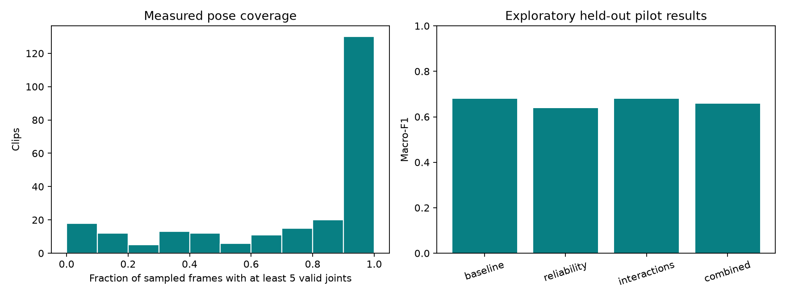
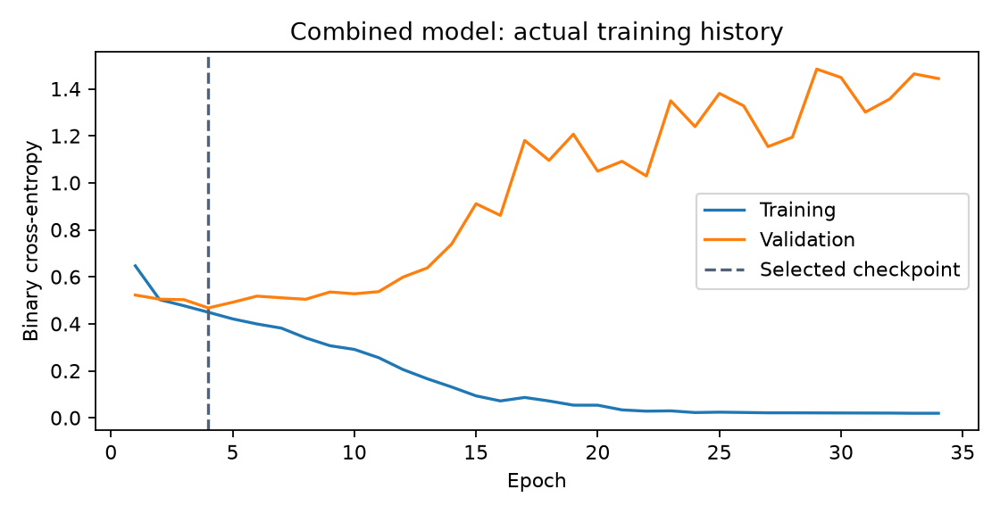
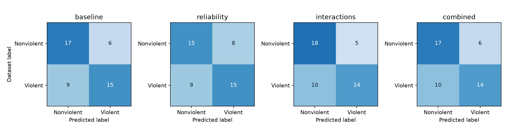
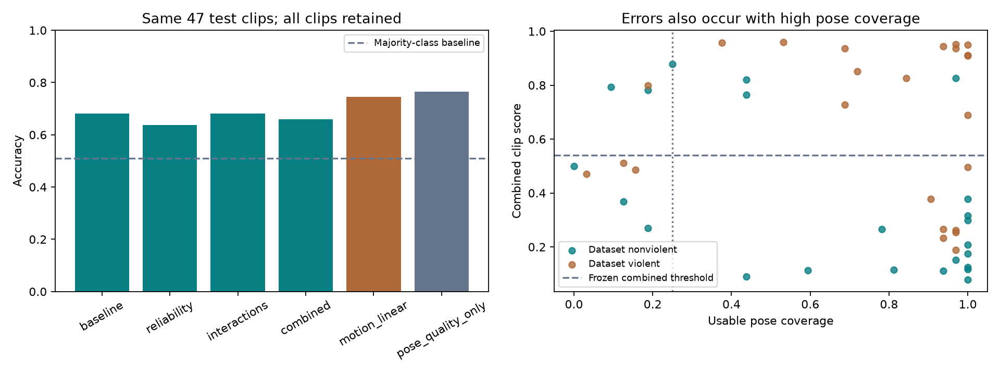

Held-out dataset label: nonviolent
Prediction: insufficient pose evidence. Score 0.794; pose coverage 9%.
football_crowds__2008_Penn_State_Football_Crowd_Pump_Up_Video__rmcmillen50__rQB1R.avi
Vishal Gautam | SVNIT Surat | Pilot results, 25 October 2026
Archived pilot and overlap review
A working pilot from raw video to a trained temporal model and annotated predictions.
Implementation pilot. These are actual results from one held-out split and one training seed per variant. They do not establish benchmark performance, reliable person attribution, or precise event timestamps.
Known source overlaps removed. This rerun excludes three related training clips and keeps the same validation and test clips. It was performed after inspecting the original test results, so it remains exploratory. Filename and image-hash checks do not establish that every shared source has been found. Correction details.
Video decoding → YOLO11n COCO-17 pose extraction → within-clip tracking → body motion and relative interaction features → shared per-person TCN → masked pooling → clip score.
Four configurations use the same pose caches and splits: baseline, confidence/mask handling, interaction features, and their combination. Training normalization uses only the training split. Checkpoints and thresholds use validation data.
147 training clips, 48 validation clips, 47 held-out test clips. 1 byte-identical duplicate removed; 3 source overlaps excluded. Average usable pose coverage: 74.3%. 31 clips have usable poses in fewer than 25% of sampled frames.
Crowd folds 1-3 for training, fold 4 for validation, fold 5 for testing. Exact byte duplicates were removed. Known source overlaps were removed using matching crowd titles/uploaders and prefix-compatible IDs. Filename checks still cannot rule out other related footage.
Filename and byte-hash grouping cannot establish that all near-duplicates have been removed. Pose extraction can lose small or occluded people and fragment tracks. The model score is not a calibrated probability.
| Variant | Parameters | Best epoch | Threshold | Accuracy | Macro-F1 | ROC-AUC |
|---|---|---|---|---|---|---|
| baseline | 36,001 | 5 | 0.59 | 68.1% | 0.680 | 0.808 |
| reliability | 37,633 | 2 | 0.52 | 63.8% | 0.638 | 0.781 |
| interactions | 36,385 | 5 | 0.71 | 68.1% | 0.679 | 0.850 |
| combined | 38,017 | 4 | 0.54 | 66.0% | 0.658 | 0.786 |
Test majority-class accuracy: 51.1%. All clips, including poor-pose clips, remain in the evaluation. The demo abstains when pose coverage is below 25%; this operational cutoff is an initial safeguard, not a validated decision rule.


All 242 source hashes match. Four saved checkpoints reproduce recorded scores on CPU with unchanged decisions, and all 6 demo videos decode fully.
| Variant | 95% accuracy interval | Pose coverage below 25% | Pose coverage at least 25% |
|---|---|---|---|
| baseline | 55.3% to 80.9% | 55.6% (n=9) | 71.1% (n=38) |
| reliability | 48.9% to 76.6% | 55.6% (n=9) | 65.8% (n=38) |
| interactions | 55.3% to 80.9% | 55.6% (n=9) | 71.1% (n=38) |
| combined | 53.2% to 78.7% | 44.4% (n=9) | 71.1% (n=38) |
10,000 class-stratified clip bootstrap resamples; percentile 95% intervals. These reflect this holdout only, not training-seed, fold, or source-group uncertainty. The strata describe failures; overall results above include every test clip. Small differences between variants are not established as significant.

The models overfit quickly. Validation loss selects early checkpoints before the loss increases. Track selection discards detected tracks in 199 clips; 1 clip has a frame-header discrepancy, so extraction uses the fully decoded length.
| Control | Classifier parameters | Accuracy | Macro-F1 | ROC-AUC |
|---|---|---|---|---|
| motion_linear | 81 | 74.5% | 0.744 | 0.766 |
| pose_quality_only | 8 | 76.6% | 0.764 | 0.873 |
The motion control uses 80 summaries of adjacent-frame differences and optical flow with a linear classifier. The quality-only control uses seven aggregate detection descriptors, without joint positions or trajectories. Normalization and fitting use training clips; regularization and thresholds use validation clips.
Quality-only accuracy is 76.6%. Scene, crowd density or detection behavior may explain part of the signal. These exploratory controls were added after the original test results were inspected; they do not establish that one representation is superior. Check the source review before interpreting this comparison.
The combined model makes 16 errors on 47 test clips: 6 false positives and 10 false negatives. 11 errors occur at or above 25% pose coverage; missing poses do not explain every failure.

Open all test contact sheets and source-overlap candidates · Saved-control audit
The first 3 filenames in each held-out class were selected without filtering by model correctness. Examples include insufficient pose evidence and incorrect predictions. Scores use the entire clip. Track overlays use the nearest sampled pose frame and do not identify violent participants.
Prediction: insufficient pose evidence. Score 0.794; pose coverage 9%.
football_crowds__2008_Penn_State_Football_Crowd_Pump_Up_Video__rmcmillen50__rQB1R.avi
Prediction: insufficient pose evidence. Score 0.500; pose coverage 0%.
football_crowds__Brazilian_Football__WELLBRAN__kKRw-i7pukY.avi
Prediction: nonviolent. Score 0.114; pose coverage 59%.
football_crowds__Brisbane_Lions_vs_Melbourne_Demons_The_Gabba__StudyinBrisbane__Y.avi
Prediction: violent. Score 0.943; pose coverage 94%.
Hooligans_violence__English_Hooligans__JohnLaw__Wob3r1Leamw.avi
Prediction: nonviolent. Score 0.188; pose coverage 97%.
Hooligans_violence__Football_Hooligans_Germany_v_Poland_Euro_2008__MorningGlory1997__gtaGluIXEaU.avi
Prediction: violent. Score 0.826; pose coverage 84%.
Hooligans_violence__Footballs_Blood_Sport_prt2__Tramppercy__P9a6qZ3r90k.avi
A locally available RWF-2000 clip, labelled non-fight, was passed through fresh pose extraction and the saved combined classifier. Its output was violent at score 0.844. The clip-level prediction disagreed with its supplied dataset label. This single example checks the inference path; it is not external benchmark evaluation.
etyiEs3j8x8_1.avi. No threshold or model was changed after inspecting this example.
Compare the skeleton and quality/motion signals across source-separated folds and seeds. Review full videos for labels and tracking failures, compare a stronger RGB/motion model, and evaluate an external surveillance split using RWF-2000.
Run .\scripts\run_pilot.ps1 from the project folder. For a new video, use the command in README.md. The pose model is pretrained; the temporal classifier is trained locally from the crowd dataset labels.
Meeting notes · Verification and limitations · Artifact audit · Inventory and split audit · Pose quality by clip · Full training results · Clip manifest